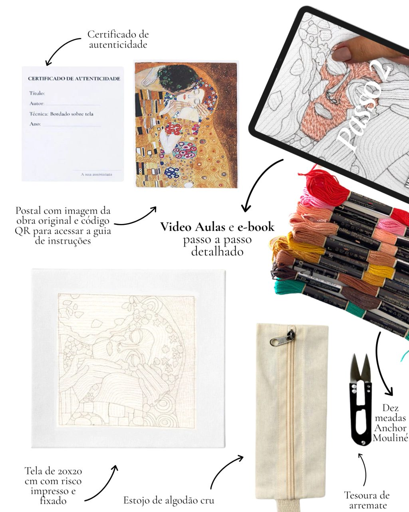

Dica · Em breve
Como montar o bastidor sem marcar o tecido
Dica · Em breve
Como montar o bastidor sem marcar o tecido
Conteúdo gratuito
O educativo
do museu
Todo museu tem o seu educativo — o nosso vive aqui. Dicas de bordado, vídeos avulsos e as histórias por trás das obras da coleção permanente: um acervo de recursos gratuitos para a sua hora com a arte, que cresce a cada novo mestre.
Os primeiros conteúdos estão em preparação. Assine a newsletter no fim da página e fique sabendo antes.
Primeiras salas
O que vem por aí
Dica · Em breve
Como montar o bastidor sem marcar o tecido
 Ponto a ponto · Em breve
Três pontos que resolvem quase toda obra
Ponto a ponto · Em breve
Três pontos que resolvem quase toda obra

Vídeo avulso · Em breve O arremate que não desfaz Você conhece esta obra? · Em breve
Por que Monet pintou a mesma ponte tantas vezes?
Você conhece esta obra? · Em breve
Por que Monet pintou a mesma ponte tantas vezes?
Newsletter
Fique sabendo quando
o educativo abrir
Os primeiros conteúdos gratuitos e cada novo mestre da coleção permanente, direto no seu e-mail.